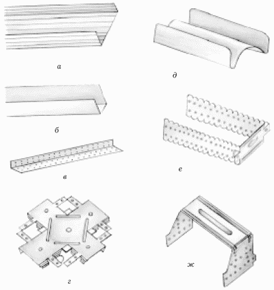

Материалы.

К основным элементам гипсокартонного покрытия относятся:
– гипсокартонные листы;
– металлический каркас из холодноформованных гнутых профилей.
В зависимости от способа установки листов сухой штукатурки вам потребуются:
– металлические профили;
– металлические направляющие;
– сухие клеевые смеси типа „Perl-fix“ для установки гипсокартона без металлических креплений;
– известь;
– гипс;
– сухой животный клей.
Для формирования каркаса подвесных потолков применяют потолочный профиль (рис. 49).

Рис. 49. Профили для формирования каркаса подвесного гипсокартонного потолка: а – потолочный профиль; б – направляющий потолочный профиль; в – угловой перфорированный профиль; г – одноуровневый соединитель (краб); д – двухуровневый соединитель; е – прямой подвес; ж – удлинитель профилей.
Потолочный профиль изготовлен методом холодного проката из оцинкованной металлической ленты толщиной 0,6 мм.
Угловой перфорированный профиль применяют для качественной отделки внешних углов поверхностей, облицованных гипсокартонными листами.
Данный профиль обеспечивает правильную геометрию внешних углов.
Одноуровневый соединитель (краб) предназначен для крепления несущих отрезков потолочного профиля к основным профилям в подвесном гипсокартонном потолке. Краб применяют вместе с потолочным профилем 60/27.
Двухуровневый соединитель предназначен для крепления несущих отрезков потолочного профиля к основным профилям в подвесном гипсокартонном потолке. Применяют вместе с потолочным профилем 60/27.
Прямой подвес предназначен для закрепления потолочных профилей к несущим конструкциям. Закрепляют на базовом потолке специальным анкерным подвесом.
Удлинитель профилей служит для соединения и наращивания потолочных профилей, несущих отрезков потолочного профиля к основным профилям в подвесном гипсокартонном потолке. Применяют вместе с потолочным профилем 60/27.
Наиболее часто гипсокартонные потолки устраивают в помещениях с неровностями в плоскости перекрытия не более 20 мм, а также там, где отсутствуют разводки коммуникаций в пазухе потолка.